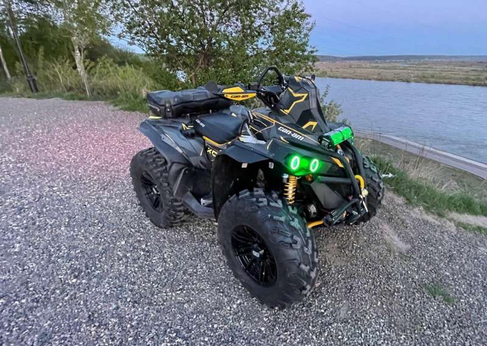

нажми--->BRP Renegade 1000 XXC<---нажми
Сайт вдохнанавлём классными квадриками
модель BRP Renegade 1000 XXC

- Объем двигателя: 976 см3
- Мощность: 82 л.с. ( 60.311 кВт)
- Модельный год: 2012
- привод: Полный
- Класс: спортивный
- Производитель: BRP
- Страна производства: Канада
- Размеры
- длинна: 2184 мм.
- ширина: 1168 мм.
- высота: 1143 мм.
- высота по седлу: 877 мм.
- Сухая масса: 312кг.
- дорожный просвет: 305 мм.
- Двигатель и КПП
- Тип двигателя: V-образный
- Кол-во цилиндров: 2
- Число тактов: 4
- Тип впуска: Инжектор
- Клапанов на цилиндр: 4
- Максимальный крутящий момент: 13,8 Нм при 7500 об/мин
- Диаметр цилиндра и ход поршня:b> 91x62 мм
- Клапанов на цилиндр:b> 4
- Тип КПП:b> Вариатор
- Охлаждение:b> Водяное
- Система запуска:b> Электростартер
- Тормозаb>
- Передние тормоза:b> Дисковые гидравлические с 2-поршневыми суппортами. Диаметр: 182 мм.
- Задние тормоза:b> Дисковые гидравлические с 2-поршневыми суппортами. Диаметр: 198 мм.
- Подвескаb>
- Задняя:b> Независимая двухрычажная . Ход - 236 мм.
- Передняя: b>Независимая двухрычажная . Ход - 229 мм.
- Колёса
- Диски <(Передний/задний): 12X8J / 12X10J